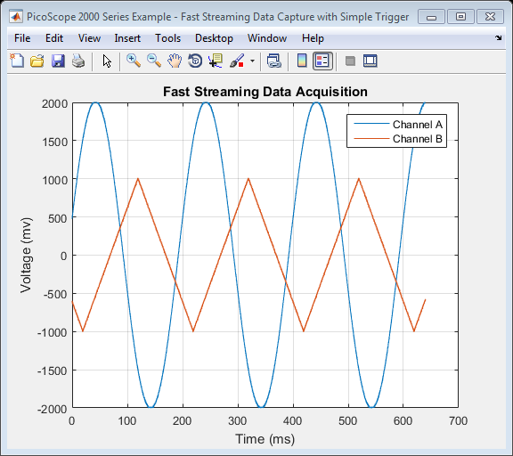

PicoScope 2000 Series Instrument Driver Oscilloscope Fast Streaming Data Capture Example
This is an example of an instrument control session using a device object. The instrument control session comprises all the steps you are likely to take when communicating with your instrument.
These steps are:
- Create a device object
- Connect to the instrument
- Configure properties
- Invoke functions
- Disconnect from the instrument
To run the instrument control session, type the name of the file, PS2000_ID_FastStreaming_SimpleTrig_Example, at the MATLAB command prompt.
The file, PS2000_ID_FASTSTREAMING_SIMPLETRIG_EXAMPLE.M must be on your MATLAB PATH. For additional information on setting your MATLAB PATH, type 'help addpath' at the MATLAB command prompt.
Example: PS2000_ID_FastStreaming_SimpleTrig_Example;
Description: Demonstrates how to set properties and call functions in order to capture fast streaming mode data from a PicoScope 2000 Series Oscilloscope. For a live fast streaming data capture example, please refer to the PicoScope 2000 Series Instrument Driver Oscilloscope Fast Streaming Live Data Capture Example.
Note: Not all device and group object functions used in this example are compatible with the Test and Measurement Tool.
Copyright: © 2013 - 2016 Pico Technology Ltd. All rights reserved.
Contents
Suggested Input Test Signals
This example was published using the following test signals:
- Channel A: 4Vpp, 5Hz sine wave
- Channel B: 2Vpp, 5Hz triangle wave
Clear Command Window and Close any Figures
clc;
close all;
Load Configuration Information
PS2000Config;
Device Connection
% Create a device object. ps2000DeviceObj = icdevice('picotech_ps2000_generic.mdd'); % Connect device object to hardware. connect(ps2000DeviceObj);
Copyright © 2013 - 2016 Pico Technology Ltd. All rights reserved.
PicoScope 2000 Series MATLAB Instrument Driver
Opening PicoScope 2000 Series device...
Instrument Device Object Using Driver : picotech_ps2000_generic.mdd
Instrument Information
Type: Oscilloscope
Manufacturer: Pico Technology Ltd.
Model: PicoScope 2000 Series
Driver Information
DriverType: MATLAB generic
DriverName: picotech_ps2000_generic.mdd
DriverVersion: 1.1.19
Communication State
Status: open
Setting Device Parameters...
Default Channel Setup:-
Channel A:-
Enabled: True
Coupling: DC
Range: 5V
Channel B:-
Enabled: True
Coupling: DC
Range: 5V
Turning off Equivalent Time Sampling...
ps2000SetEts: ETS switched off.
Turning off trigger...
Default data collection parameters:-
Number of samples: 1024
Block sampling interval: 0.66 ms
Oversampling factor: 1
Default Streaming mode parameters:-
Sampling interval: 0.001 ms
Overview buffer size: 15000 samples
Streaming auto stop: 1
Default Signal generator parameters:-
Start frequency: 1000 Hz
Stop frequency: 1000 Hz
Offset voltage: 0 mV
Peak to Peak voltage: 2000 mV
Initialisation complete.
Connected to PicoScope 2000 Series device:-
Instrument Model: 2205A
Batch/Serial Number: GRA01/002
Number of Channels: 2
Buffer memory: 16384 samples
Maximum sampling rate: 200 MS/s
Signal Generator Type: Arbitrary Waveform Generator
Obtain Device Groups
Obtain references to device groups to access their respective properties and functions.
% Block specific properties and functions are located in the Instrument % Driver's Block group. blockGroupObj = get(ps2000DeviceObj, 'Block'); blockGroupObj = blockGroupObj(1); % Streaming specific properties and functions are located in the Instrument % Driver's Streaming group. streamingGroupObj = get(ps2000DeviceObj, 'Streaming'); streamingGroupObj = streamingGroupObj(1); % Trigger specific properties and functions are located in the Instrument % Driver's Trigger group. triggerGroupObj = get(ps2000DeviceObj, 'Trigger'); triggerGroupObj = triggerGroupObj(1);
Configure Device
Enable Channels A and B, set the sampling interval, number of samples to collect and set a simple trigger.
Set channels:
% Channel : 0 (ps2000Enuminfo.enPS2000Channel.PS2000_CHANNEL_A) % Enabled : 1 (PicoConstants.TRUE) % DC : 1 (DC Coupling) % Range : 7 (ps2000Enuminfo.enPS2000Range.PS2000_2V) [status.setChA] = invoke(ps2000DeviceObj, 'ps2000SetChannel', 0, 1, 1, 7); % Channel : 1 (ps2000Enuminfo.enPS2000Channel.PS2000_CHANNEL_B) % Enabled : 1 (PicoConstants.TRUE) % DC : 1 (DC Coupling) % Range : 7 (ps2000Enuminfo.enPS2000Range.PS2000_2V) [status.setChB] = invoke(ps2000DeviceObj, 'ps2000SetChannel', 1, 1, 1, 7);
Set sampling interval and number of samples to collect:
% Set sampling interval - default sampling interval of 1us is used. The % driver will calculate the nearest sampling interval that is relatively % shorter if an exact match cannot be found. Sampling rates faster than % 1MS/s are not recommended as these are low memory devices. % To set a new sampling interval e.g. 10 microseconds, first find the % closest sampling interval to 10 microseconds. Here the 1us interval is % used. [samplingIntervalMs, maxBlockSamples] = invoke(blockGroupObj, 'setBlockIntervalMs', 1e-3); % Next, set the actual sampling interval. set(streamingGroupObj, 'streamingIntervalMs', samplingIntervalMs); % Collect 1 million samples from the driver. set(ps2000DeviceObj, 'numberOfSamples', 1e6); % Set the size of the overview buffer used for streaming capture - this % should be large enough for the Instrument Driver to collect data inside % the getFastStreamingData function as it runs a loop. set(streamingGroupObj, 'overviewBufferSize', 50000);
Set simple trigger:
% Set the autoTriggerMs property in order to automatically trigger the % oscilloscope after 1 second if a trigger event has not occurred. Set to 0 % to wait indefinitely for a trigger event. set(triggerGroupObj, 'autoTriggerMs', 1000); % Parameters taken from PS2000Config file which are loaded into workspace. % Trigger delay is set to 0 (first sample corresponds to sample at trigger % point. [simpleTriggerStatus] = invoke(triggerGroupObj, 'setSimpleTrigger', ... ps2000ConfigInfo.simpleTrigger.source, ps2000ConfigInfo.simpleTrigger.threshold, ps2000ConfigInfo.simpleTrigger.direction);
Fast Streaming Data Collection
Collect fast streaming data and retrieve the data from the driver once data collection is complete.
disp('Collecting streaming data...') % Start Time : 0.0 (nanoseconds) startTime = 0.0; [numDataValues, startTime, bufferChA, bufferChB, overflow, triggerAt, trigger] = invoke(streamingGroupObj, 'getFastStreamingData', startTime); disp('Data collection complete.');
Collecting streaming data... Auto stop Retrieving data... Data collection complete.
Stop the Device
Additional fast streaming data can be captured prior to stopping the device.
stopStatus = invoke(ps2000DeviceObj, 'ps2000Stop');
Process Data
Process data as required - in this example the data will be displayed in a figure.
disp('Processing data for plot...') % Specify time axis in milliseconds. timeLabel = 'Time (ms)'; % Calculate time axis values. time = (0:1:numDataValues - 1) * get(streamingGroupObj, 'streamingIntervalMs'); % Plot data figure1 = figure('Name','PicoScope 2000 Series Example - Fast Streaming Data Capture with Simple Trigger', ... 'NumberTitle', 'off'); plot(time, bufferChA, time, bufferChB); grid on; title('Fast Streaming Data Acquisition'); xlabel(timeLabel); ylabel('Voltage (mv)'); legend('Channel A', 'Channel B'); grid on;
Processing data for plot...
Disconnect
Disconnect device object from hardware.
disconnect(ps2000DeviceObj); delete(ps2000DeviceObj);
Connection to PicoScope 2205A with serial number GRA01/002 closed successfully. Libraries unloaded successfully.